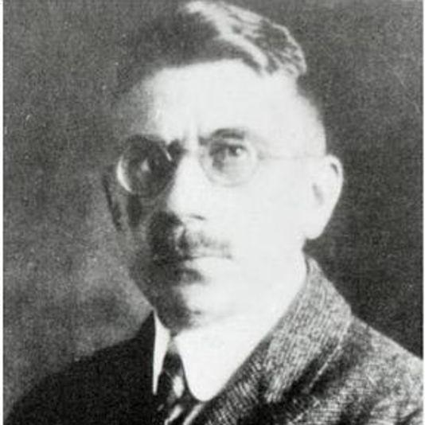
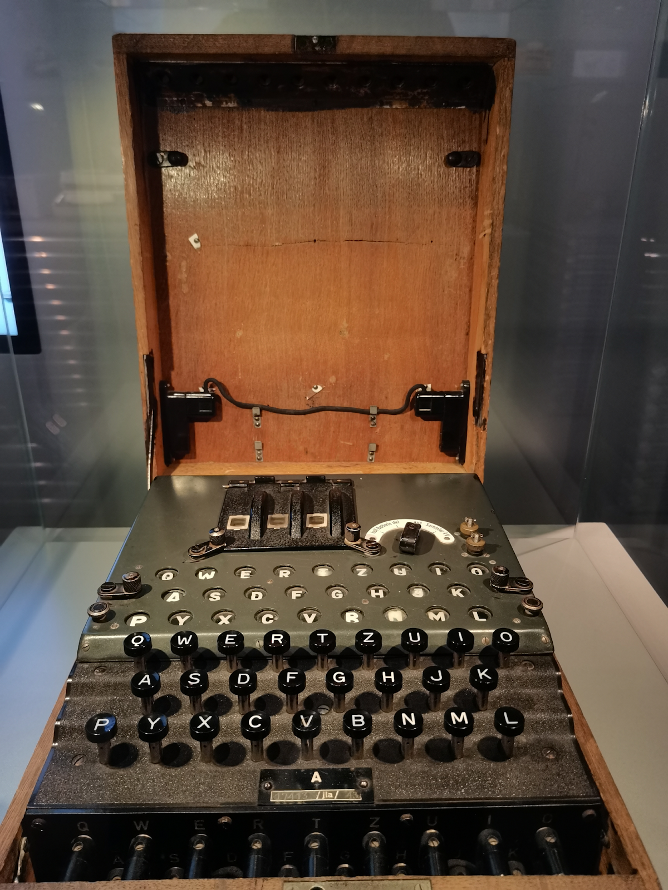
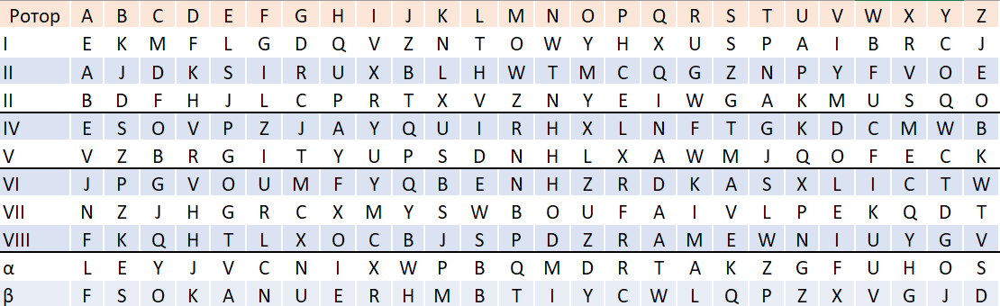
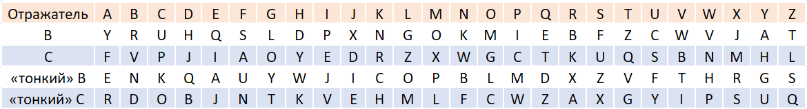
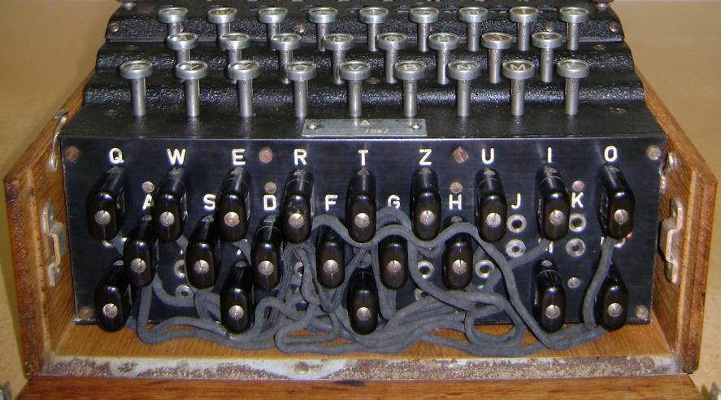

Историческая справка:
“Энигма” - по-настоящему легендарная шифровальная машина, которая активно использовалась во время Второй мировой войны в гитлеровской Германии.
Создатель Энигмы, Артур Шербиус, - немецкий инженер, изучал электротехнику в техническом университете Мюнхена, защитил диссертацию, став доктором инженерных наук около 1904 года.
Работал на ряд компаний, занимающихся электрическим оборудованием в Германии и Швейцарии до 1918 года, а в 1918 стал сооснователем фирмы «Шербиус и Риттер», занимавшейся всевозможными электроприборами.В том же году подал первую заявку на патент на роторную шифровальную машину.

“Энигма”, чья первая коммерческая версия была представлена в 1923 году, в течение следующих 20 лет претерпела множество конструкторских изменений, далеко не сразу став классической и наиболее известной версией шифровальной машинки.

В основе “Энигмы” лежали шифровальные диски. В разных моделях количество используемых дисков менялось, например, если в первой версии их было всего 3, когда как в более поздних моделях их количество выросло до 8, а версия “Kriegsmarine M4” также требовала шифровальный диск особой группы - Бета или Гамма.
Таблица внутренних перепаек шифровальных дисков приведена ниже.

В модели Enigma C(1924) был использован рефлектор - неподвижный шифровальный диск, в котором подпружиненные контакты перепаяны попарно между собой. Рефлектор позволял «отразить» сигнал обратно в шифровальные диски, за счет чего процесс шифрования и расшифрования становился симметричным (одинаковым). Таким образом, например, если буква А заменялась на В, то буква В заменялась на А.
Таблица с внутренними перепайками отражателя представлена ниже.

И, наконец, расскажем о коммутационной панели, впервые появившейся в модели Enigma I в 1932 году. Это набор разъемов по числу символов, зашифровываемых машиной.
Разъемы могут попарно соединяться кабелями, в этом случае после нажатия клавиши сигнал перенаправляется на другой контакт входного диска согласно соединению кабелем.
Например, “A” и “W” могли быть соединены в пару. Например, когда оператор нажимал «A», сигнал направлялся в «W», и только после этого уже во входной диск.
Коммутационная панель вносит наибольшее количество вариантов в множество ключей «Энигмы».
